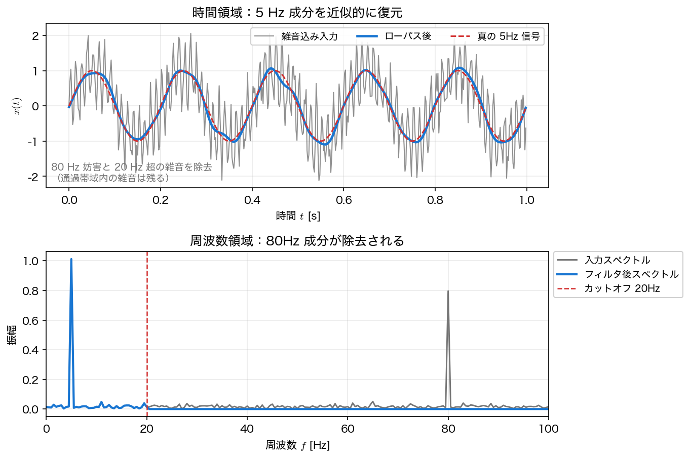

周波数領域フィルタリング
第3回で学んだ 畳み込み定理 の最も直接的な応用が フィルタリング である。本ページでは、フィルタが周波数領域では「掛け算」になることを確認し、rfft/irfft で雑音を除去する。
フィルタとは「周波数応答を掛ける」こと
線形時不変（LTI）なフィルタの出力は、入力 \(x(t)\) とフィルタの インパルス応答 \(h(t)\) の 畳み込み で表せる。
ここで畳み込み定理を使うと、周波数領域では 単なる積 になる。
\(H(\omega)\) を 周波数応答（frequency response） と呼ぶ。フィルタリングとは、要するに「各周波数成分 \(X(\omega)\) を \(H(\omega)\) 倍する」操作にすぎない。だから、残したい帯域では \(\lvert H\rvert\approx 1\)、消したい帯域では \(\lvert H\rvert\approx 0\) となるように \(H(\omega)\) を設計すればよい（\(H\) は一般に複素数なので、通過・阻止は振幅 \(\lvert H\rvert\) で判断する）。
周波数応答 \(H(j\omega)\) と伝達関数 \(H(s)\)
ここで扱う \(H(\omega)\) は各周波数での複素利得を表す 周波数応答 である。一方、インパルス応答をラプラス変換して複素平面 \(s=\sigma+j\omega\) 上へ拡張したものが 伝達関数 \(H(s)\) であり、第6〜8回で扱う。
この 2 つが \(H(\omega)=H(j\omega)\) と結びつくのは、ラプラス変換の収束領域が虚軸を含むとき に限る。因果的で BIBO 安定なフィルタ（\(\int\lvert h(t)\rvert dt<\infty\)）ならこれは満たされ、周波数応答は伝達関数を虚軸に制限したものと言ってよい。逆に不安定な系では、\(H(s)\) は極の右側で定義されて虚軸を含まず、周波数応答そのものが（通常の意味では）存在しない。本ページで扱うのはすべて安定なフィルタなので、以降は両者を同一視してよい。両者はしばしば同じ記号 \(H\) で書かれるが、変数（\(\omega\) か \(s\) か）で区別する。
| フィルタ | 通す帯域 | 用途の例 |
|---|---|---|
| ローパス（低域通過） | 低周波 | 高周波雑音の除去、平滑化 |
| ハイパス（高域通過） | 高周波 | ドリフト（低周波変動）の除去 |
| バンドパス（帯域通過） | ある帯域のみ | 特定の周波数成分の抽出 |
| バンドストップ（帯域阻止） | ある帯域以外 | 電源ハム（50/60Hz）の除去 |
rfft → 帯域マスク → irfft
最も素朴な実装は、FFT して、不要な周波数のスペクトルを \(0\) にして、逆 FFT する だけである。例として、\(5\) Hz の信号に \(80\) Hz の妨害と白色雑音を混ぜたものを、\(20\) Hz の ローパス で復元する。
import numpy as np
rng = np.random.default_rng(0)
fs, T = 500.0, 2.0
N = int(fs * T)
t = np.arange(N) / fs
clean = np.sin(2*np.pi*5*t) # 取り出したい 5Hz
x = clean + 0.8*np.sin(2*np.pi*80*t) + 0.3*rng.standard_normal(N) # 雑音込み
X = np.fft.rfft(x)
freq = np.fft.rfftfreq(N, 1/fs)
H = (freq <= 20.0).astype(float) # 周波数応答：20Hz 以下を通す理想ローパス
xf = np.fft.irfft(X * H, n=N) # フィルタ後の信号（時間領域へ戻す）
rms = lambda a: np.sqrt(np.mean(a**2))
print(f"RMS誤差 入力 vs 真 : {rms(x - clean):.4f}")
print(f"RMS誤差 フィルタ後 vs 真: {rms(xf - clean):.4f} (改善 {rms(x-clean)/rms(xf-clean):.2f} 倍)")
真の信号との RMS 誤差が \(0.64\to 0.08\) へ、約 7.6 倍 改善した。スペクトルを見ると、\(80\) Hz の妨害と \(20\) Hz より上の雑音が除去され、\(5\) Hz のピークがはっきり残る。ただし RMS 誤差が \(0\) にならないことからわかるように、通過帯域（\(20\) Hz 以下）に含まれる雑音は取り除けず、復元はあくまで近似的である。

H を変えるだけで他のフィルタも作れる。例えばハイパスは freq >= fc、バンドパスは (freq >= f1) & (freq <= f2) とすればよい。
このマスク方式は「周期境界を仮定したオフライン処理」
rfft→マスク→irfft は、記録全体を一度に周波数領域へ移して掛け算する処理である。DFT は有限記録が 周期的に繰り返す とみなす（第3回 高速畳み込みと相互相関 の巡回畳み込みの注意と同じ）ので、これは実質的に 周期延長した信号への巡回畳み込み にあたる。しかも実数の矩形マスク \(H\) は 零位相（位相を動かさない）かつ 非因果（出力が未来の入力にも依存する）で、通常の逐次的な LTI 線形畳み込み（因果的フィルタ）とは性質が異なる。記録全体がそろってから処理する オフライン解析 では有効だが、端の近くでは周期の折り返しの影響を受けやすい。
実時間・ストリーミングや因果的な処理が必要なときは、scipy.signal の FIR フィルタ設計（firwin）や IIR フィルタ（butter＋sosfilt）を使う。零位相のオフライン処理をきれいに行いたいときは、前後2方向にかけて位相ずれを打ち消す scipy.signal.sosfiltfilt が定番である。
理想フィルタの落とし穴：リンギング
上のような 矩形 の周波数応答（帯域内が \(1\)、帯域外が \(0\) で急に切れる）は「理想フィルタ」と呼ばれるが、実は副作用がある。第3回で見た変換対を思い出すと、周波数領域の矩形 は 時間領域の sinc（\(\sin(t)/t\)）に対応する。つまり理想ローパスのインパルス応答は時間方向に長く尾を引き、しかも振動する。
その結果、信号に急な段差（ステップ）があると、フィルタ後の波形にギザギザの リンギング（Gibbs 現象） が現れる。これは第2回のフーリエ級数の打ち切りで見た overshoot と同じ原因である。
実務でのフィルタ設計
リンギングを避けるには、周波数応答を 急に切らず、なめらかに遷移 させる（遷移帯をもたせる）。窓関数（本回の前半）を併用したり、scipy.signal のフィルタ設計（butter／firwin など）を使うのが実務的である。ローパスの「鋭さ」と「リンギングの少なさ」は トレードオフ で、本回の前半で見た「分解能 vs 漏れ」と同じ構図になっている。素朴な矩形カットは原理の理解には最適だが、本番では遷移をなめらかにすると考えてよい。
まとめ
- フィルタリングは畳み込み定理の応用：出力 \(Y(\omega)=X(\omega)H(\omega)\)。残す帯域で \(\lvert H\rvert\approx1\)、消す帯域で \(\lvert H\rvert\approx0\)（通過・阻止は振幅 \(\lvert H\rvert\) で判断）。
- 実装は
rfft→ 周波数マスクHを掛ける →irfft。ローパスで 80Hz 妨害と 20Hz 超の雑音を除去し RMS 誤差を 7.6 倍改善した（通過帯域内の雑音は残るので近似的な復元）。 Hの作り方でローパス/ハイパス/バンドパス/バンドストップを切り替えられる。- 理想（矩形）フィルタ は時間領域で sinc になり リンギング を生む。実務では遷移帯をなめらかにする。
本講義との接続
第3回のフーリエ変換・FFT・高速畳み込みに続き、第4回ではスペクトル解析（パワースペクトル・窓・ウェルチ法）とフィルタリングまで、フーリエ変換の理論と応用が一通りそろった。次回の 第5回 発表会① では、これらの手法を使って各自が見つけた実問題を解き、発表する。準備の進め方や発表のフォーマットは 発表会ガイド を参照すること。